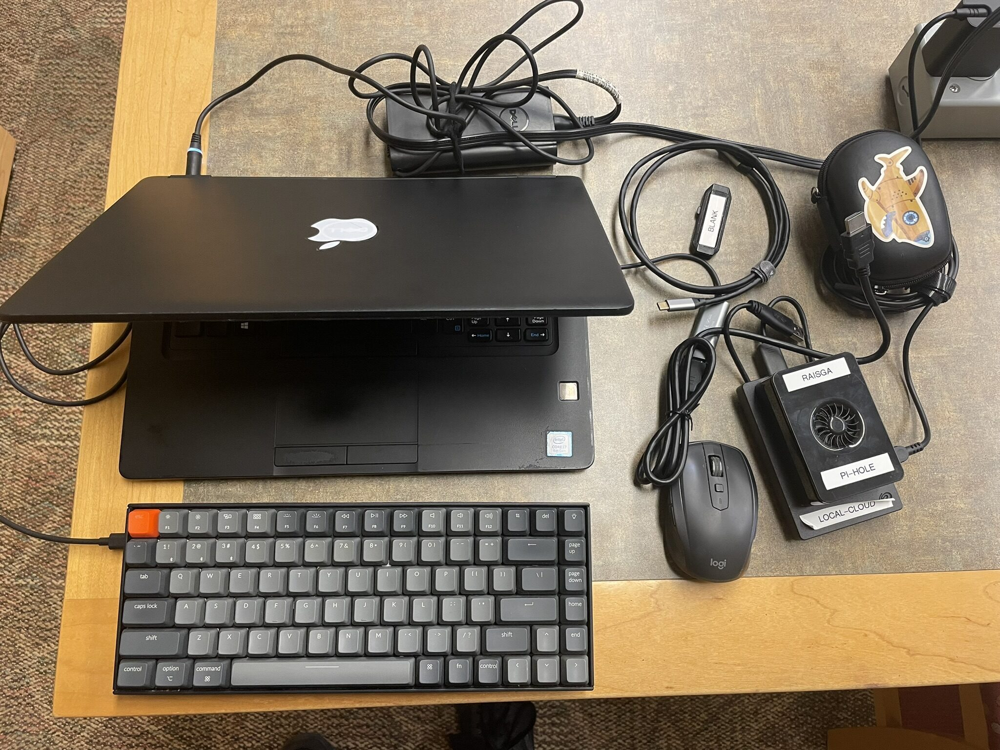
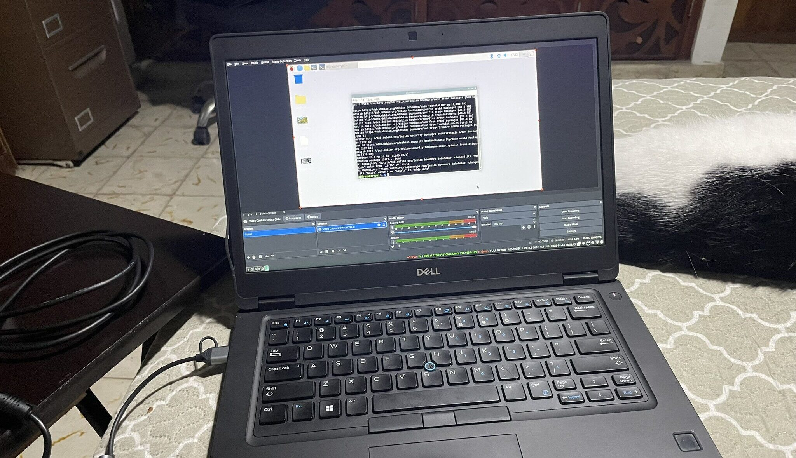
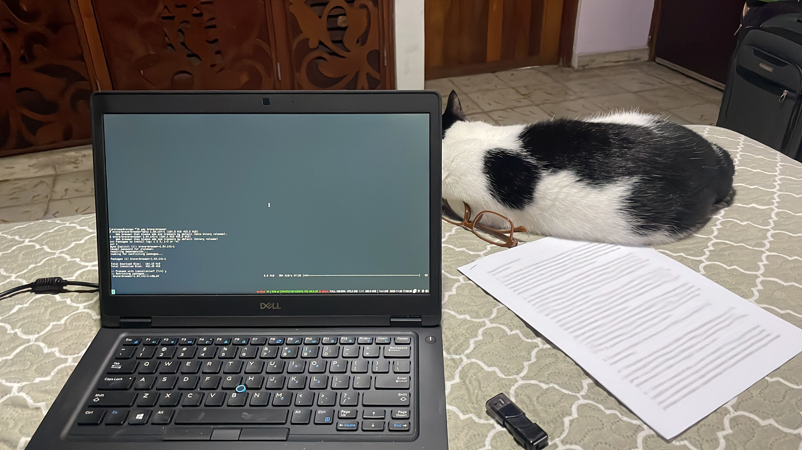
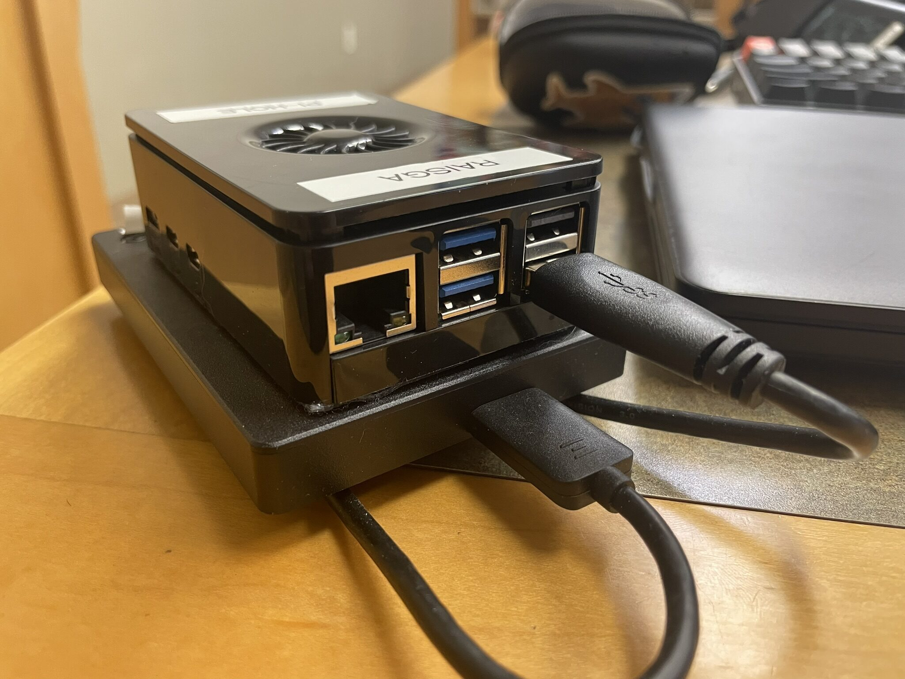
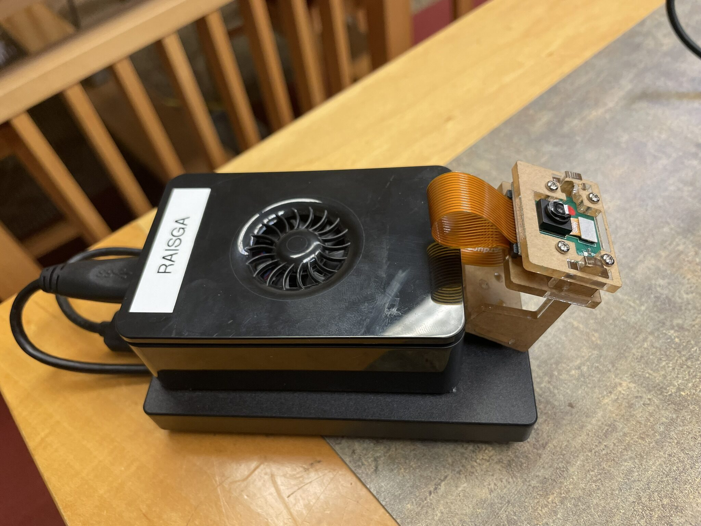

Building p4n4: The Beginning
Every project starts somewhere. For p4n4, it started with a question: what would it actually take to run a full IoT + AI stack entirely on local hardware, no cloud dependency, no monthly bill, no data leaving the network?
The Idea
The idea is straightforward... A self-hosted platform that handles the whole pipeline... sensors publishing over MQTT, time-series data landing in InfluxDB, Node-RED wiring the logic together, Grafana visualising it, and Ollama running inference locally. All orchestrated through Docker Compose on a embedded Linux system, just like a Raspberry Pi.
Three stacks: MING for IoT, GenAI for the LLM layer, and Edge AI for on-device inference. The goal is a platform anyone can clone, configure, and bring up in minutes.
Before writing a single line of compose config, the first session was all hardware: get the Pi physically set up, verify the peripherals work, and establish a workflow for developing against it from a laptop.
Initial Setup
The first task was getting a clean working environment on the laptop side, a place to write code, push config, and SSH into the Pi without friction.

Standard developer workstation prep: SSH keys provisioned and copied to the Pi, ~/.ssh/config entry added so ssh p4n4 just works, and a local clone of the repo ready to go. The Pi itself was flashed with Raspberry Pi OS Lite (64-bit) using Raspberry Pi Imager, with SSH enabled from the imager's advanced options so it came up headless on first boot.
Using OBS to Monitor the Pi
Developing headless against a Pi is fine once things are stable, but in an early stage, it helps to have eyes on what's happening. You know, the boot messages, kernel output, service logs scrolling by... Instead of connecting the Pi to a monitor, I used a OBS Studio set up on my laptop to capture and display the Pi's HDMI output over a capture card. This is because it's easier to carry my laptop instead of a stand-alone monitor just for the Raspberry Pi :)

OBS made it easy to confirm the Pi was booting cleanly, watch systemd service startup, and catch any early errors without needing a dedicated screen. As a quick sanity check that the capture was working before attaching the Pi, a test streaming was displayed.

Once the stream was confirmed to be live, the capture card was switched to the Pi's HDMI output. From here on, the laptop handled both development and monitoring in one window.
Connecting the USB Hard Drive
One of the key hardware requirements for p4n4 is persistent, high-capacity local storage. We can save videos recording, and also the InfluxDB time-series data accumulates fast, and keeping it on the Pi's SD card can be both slow and risky (data loss or corruption). The plan is to mount a USB hard drive as the data volume for the project. I choose a 1TB Seagate USB 3.0 Hard Drive.

The drive was connected, identified with lsblk, formatted to ext4, and mounted at /mnt/p4n4-data. A quick write/read test confirmed throughput was acceptable. The mount was added to /etc/fstab with nofail so a missing drive doesn't block boot.
Connecting the Raspberry Pi Camera Module
The camera is intended for the Edge AI side of the platform. Streaming frames to an inference pipeline running Edge Impulse. Getting it wired up and confirmed working early removes a lot of headaches later!

The camera was connected through the Pi 5's MIPI CSI port, enabled via raspi-config, and tested with rpicam-still -o test.jpg. The image came back clean. The camera is now a confirmed, available peripheral integration with the Edge AI stack comes later.
What's Next
With the physical stack assembled and verified, the next session moves into software: getting Docker and Compose installed on the Pi, bringing up the IoT stack for the first time, and wiring the first sensor data through the MING pipeline.
The hardware side is done... Now time to write some config and code! :D